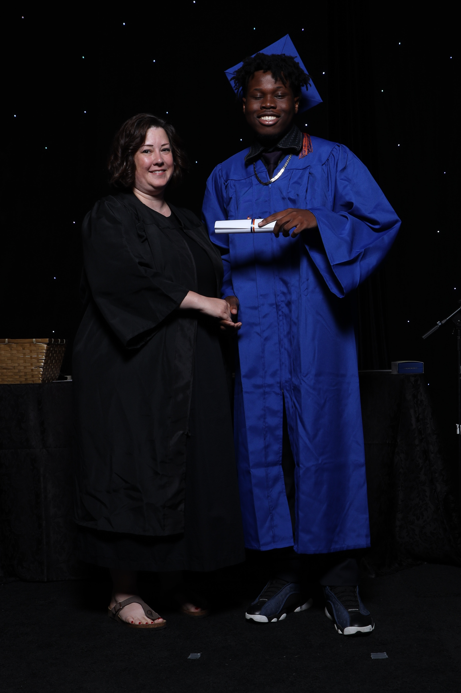

Introduction
Welcome to my portfolio website! Here you’ll find all the details about me the different sections you see is how you can reach me, who I am and all the projects Ive done so Welcome come get to know more about me.

About My Journey
If i'm not mistasken I am the youngest student in almost each class especially here in Web programming, the journey to even get accepted here at Humber College was by far crazy. I needed a Math credit for each program I applied for at Humber at the time I didn't even know about it all my semesters were full with different Classes, so I fought to get Math on my timetable and it worked and I passes and now i'm finally here. 
My favourite quote
"The calmer you are, the clearer you think. Move with strategy, not emotions."
This Quote was sent to me by my dear mom. During my first week here at Humber college I was going through a lot because this whole enviroment was very different and I felt like I couldn't handle it, My mom was the only one who knew about it and she was kind enough to be by my side and proceeded to provide this great quote.